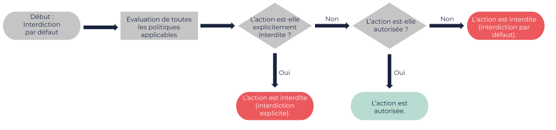

Éléments des politiques EIM
Cette page liste les différents éléments que vous pouvez utiliser dans les documents de politiques EIM.
|
Les politiques EIM sont sensibles à la casse. Tous les éléments doivent commencer par une lettre majuscule. |
Éléments
Statement
| Description | Exemples | ||
|---|---|---|---|
L’élément principal, requis dans tout attribut Il y a un élément
|
|
Sid
| Description | Exemples |
|---|---|
Le statement ID ( |
|
Action
| Description | Exemples | ||
|---|---|---|---|
Spécifie une ou plusieurs actions autorisées ou interdites. Chaque déclaration individuelle requiert soit l’élément Pour spécifier une action, vous devez spécifier le service suivi de deux-points, et utiliser le nom de la méthode API (par exemple Vous devez utiliser un des codes suivants :
Cet élément est une collection qui contient une ou plusieurs actions, encadrées par des guillemets et séparées par des virgules. Vous pouvez utiliser un astérisque ( |
Élément Élément Élément Élément |
NotAction
| Description | Exemples |
|---|---|
Spécifie une ou plusieurs exceptions à une liste d’actions. Chaque déclaration individuelle requiert soit l’élément Le format de cet élément est le même que celui de l’élément Vous pouvez utiliser cet élément pour créer des déclarations plus courtes plutôt que de spécifier une longue liste d’actions dans l’élément |
Élément
|
Effect
| Description | Exemples |
|---|---|
Spécifie si la déclaration autorise ( Par défaut, l’accès aux ressources est interdit jusqu’à ce qu’il soit explicitement autorisé dans une déclaration d’une politique. Pour autoriser les utilisateurs à accéder à vos ressources, vous devez paramétrer l’élément |
|
Différence entre interdiction par défaut et interdiction explicite
Lorsqu’un utilisateur envoie une requête, EIM évalue cette requête en fonction des politiques incluses ou gérées applicables.
Si vous n’avez pas explicitement autorisé l’action contenue dans la requête à cet utilisateur dans une déclaration de politique, l’action est interdite. Il s’agit de l’interdiction par défaut (default deny). Cependant, si vous avez explicitement interdit l’action à cet utilisateur dans une déclaration de politique, cette action est interdite même si une autre déclaration de politique l’autorise. Il s’agit de l’interdiction explicite (explicit deny).
En d’autres termes, une autorisation outrepasse une interdiction par défaut, alors qu’une interdiction explicite outrepasse toute autorisation et ne peut être outrepassée.
Le schéma suivant montre le processus pour déterminer si l’action contenue dans la requête est autorisée ou interdite :

Pages connexes